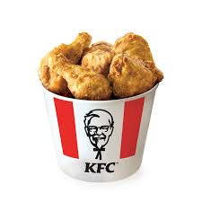

 KFC Corporation,[4] doing business as KFC (also commonly referred to by its historical name Kentucky Fried Chicken), is an American fast food restaurant chain that specializes in fried chicken. Headquartered in Louisville, Kentucky, it is the world's second-largest restaurant chain (as measured by sales) after McDonald's, with over 30,000 locations globally in 150 countries as of April 2024.[5] The chain is a subsidiary of Yum! Brands, a restaurant company that also owns the Pizza Hut and Taco Bell chains.[6]
 McDonald's Corporation, doing business as McDonald's, is an American multinational fast food chain, founded in 1940 as a restaurant operated by Richard and Maurice McDonald, in San Bernardino, California, United States. They rechristened their business as a hamburger stand and later turned the company into a franchise, with the Golden Arches logo being introduced in 1953 at a location in Phoenix, Arizona. In 1955, Ray Kroc, a businessman, joined the company as a franchise agent and, in 1961, bought out the McDonald brothers. Previously headquartered in Oak Brook, Illinois, it moved to nearby Chicago in June 2018.[9][10][11][12] McDonald's is also a real estate company through its ownership of around 70% of restaurant buildings and 45% of the underlying land (which it leases to its franchisees).[13][14]
McDonald's Corporation, doing business as McDonald's, is an American multinational fast food chain, founded in 1940 as a restaurant operated by Richard and Maurice McDonald, in San Bernardino, California, United States. They rechristened their business as a hamburger stand and later turned the company into a franchise, with the Golden Arches logo being introduced in 1953 at a location in Phoenix, Arizona. In 1955, Ray Kroc, a businessman, joined the company as a franchise agent and, in 1961, bought out the McDonald brothers. Previously headquartered in Oak Brook, Illinois, it moved to nearby Chicago in June 2018.[9][10][11][12] McDonald's is also a real estate company through its ownership of around 70% of restaurant buildings and 45% of the underlying land (which it leases to its franchisees).[13][14]